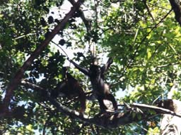
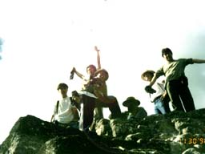
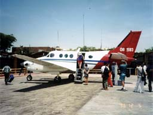
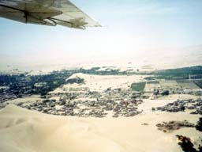
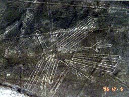

| ソニックチーム南米へ行く（３） | |
|
[ソニックチーム南米へ行く(2)][ソニックチーム南米へ行く(4)]
30日には飛行機でグァテマラへ飛んだ。最初に行くのは密林にある「ティカル遺跡」だ。
ジャングルを入って間もなくのところにキャンプ場のようなロッジがあり、そこを起点に徒歩で移動する。
マヤ神殿特有の頂上まで続く正面階段を登りきって下を見下ろせば、今登ってきた階段は絶壁のようにはるか下まで続いている。
翌日の12月１日は車で「ワシャクトゥン遺跡」へ。ぬかるみのためデコボコになった道を４ＷＤが進む。泥はまるで沼のようだ。
２日は、一昨日回りきれなかったトゥルムの他の神殿へ。
ペルーといえば、スピルバーグとルーカスが『レイダース』を撮影したところの１つだと聞いていた。
しかしジャングルにカリブ海に砂漠にと、この旅程そのものが、まさにインディ・ジョーンズの冒険物語である。 つづく。 |  ジャングルで猿あばれる |
 お兄ちゃんそれな〜に？ |
|  またやっちゃった今日のキメッ！ |
 この飛行機、小さくない？ |
|  で、結局イカ上空 |
 ついに見ました。これがアレです。 |
| SONIC TEAM 1998 | |
<<戻る>>